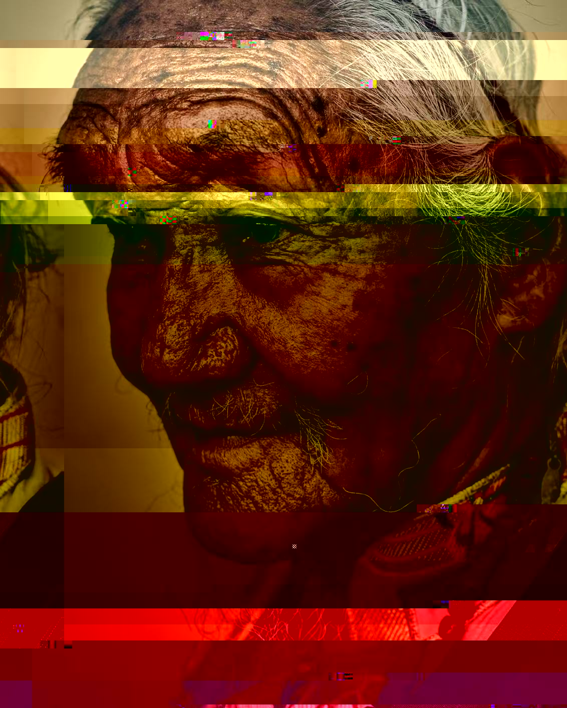
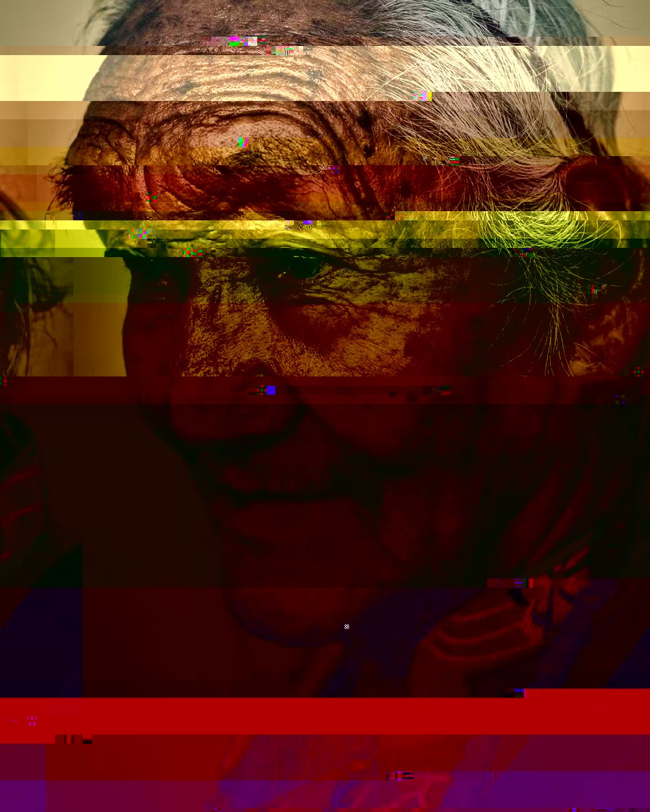
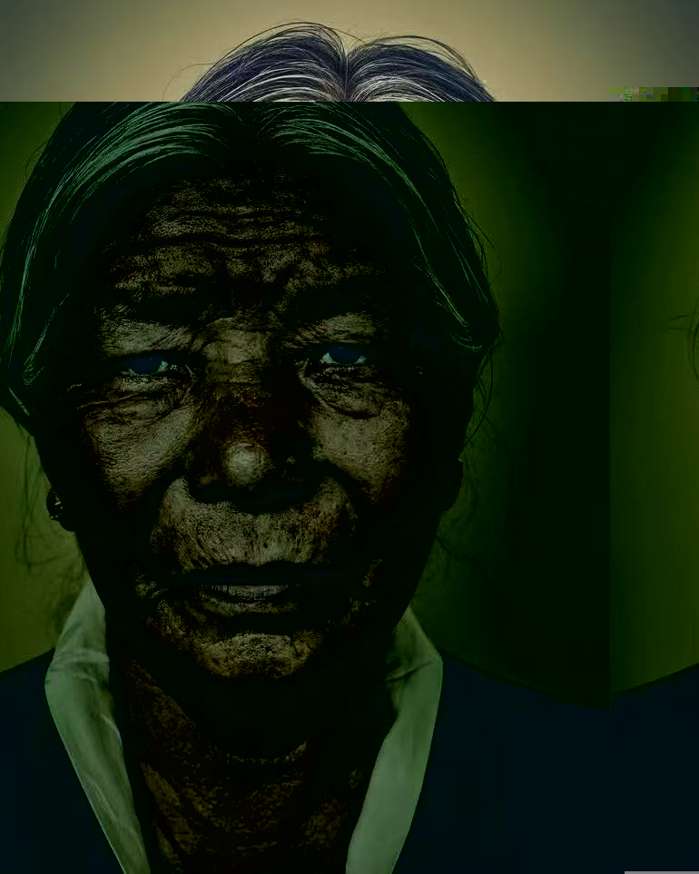
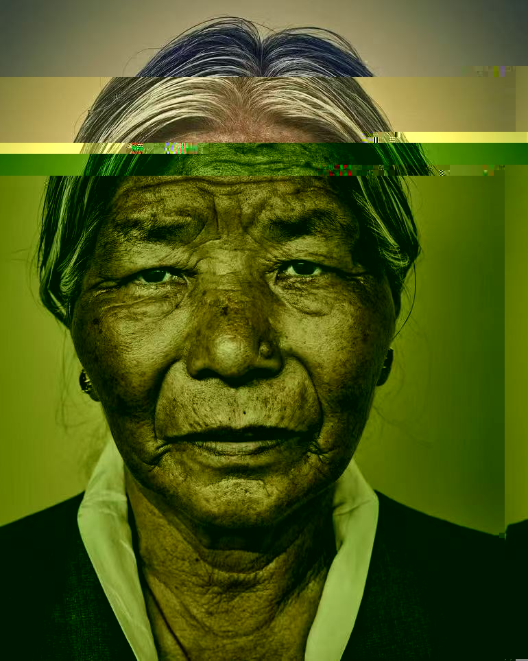
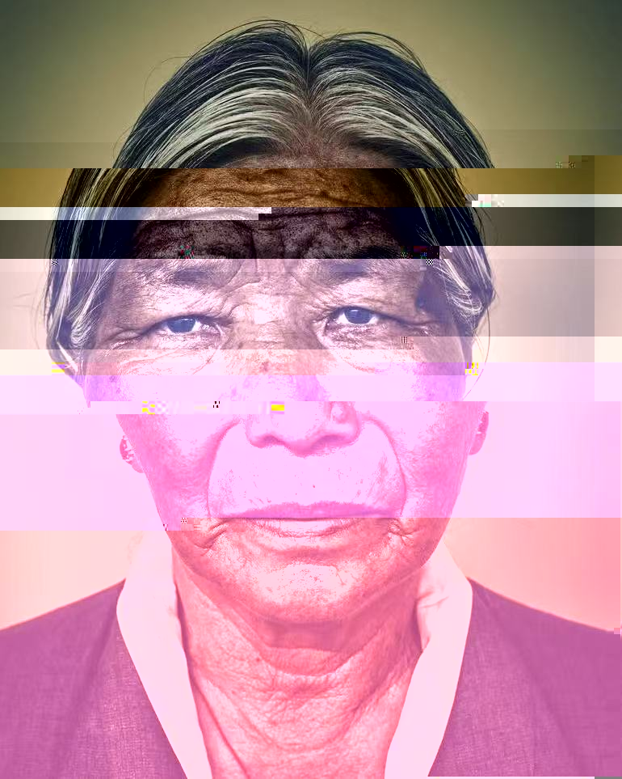
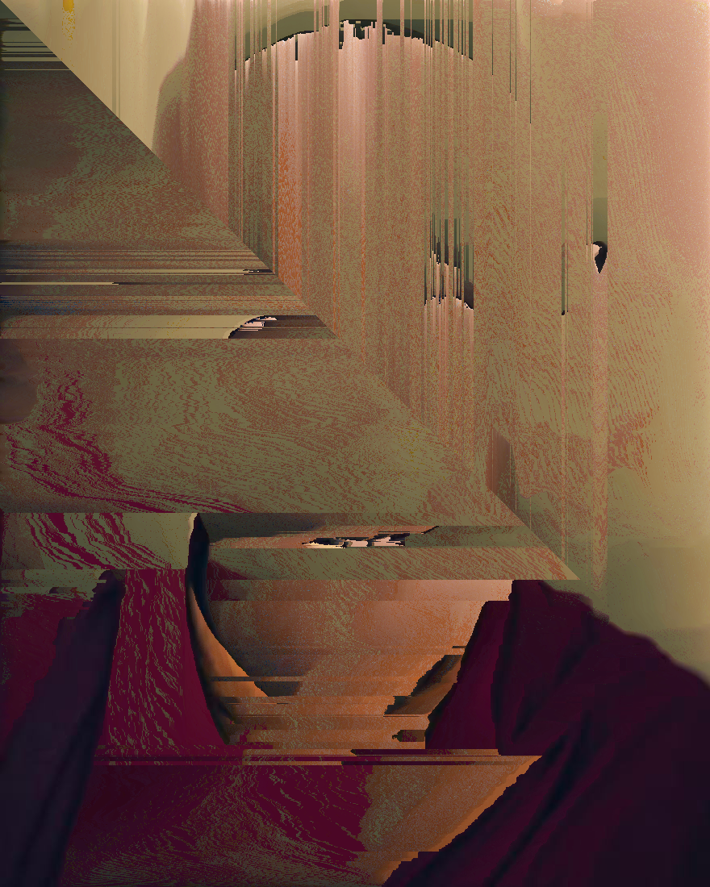
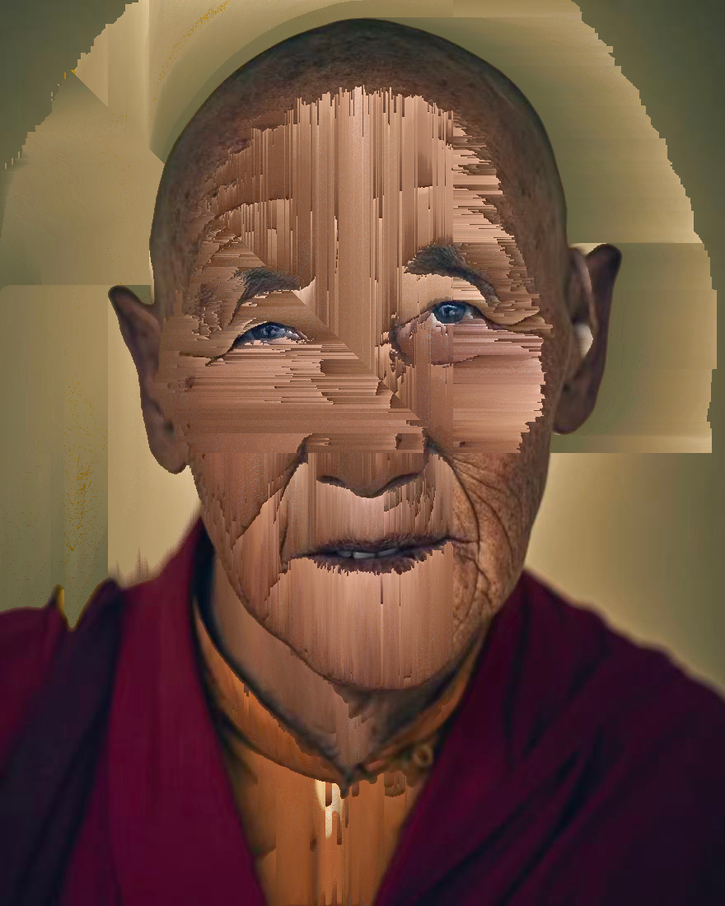
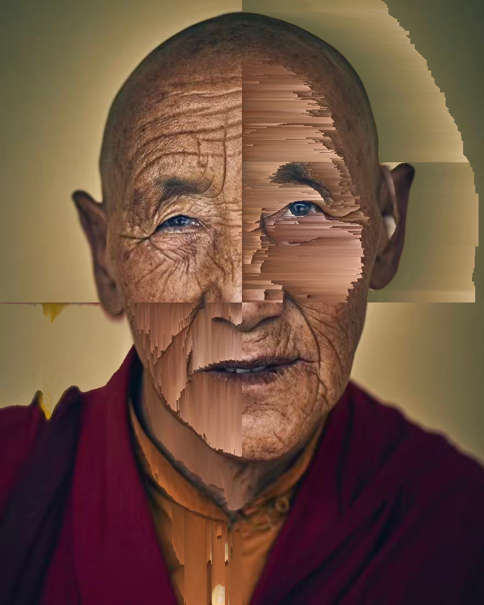
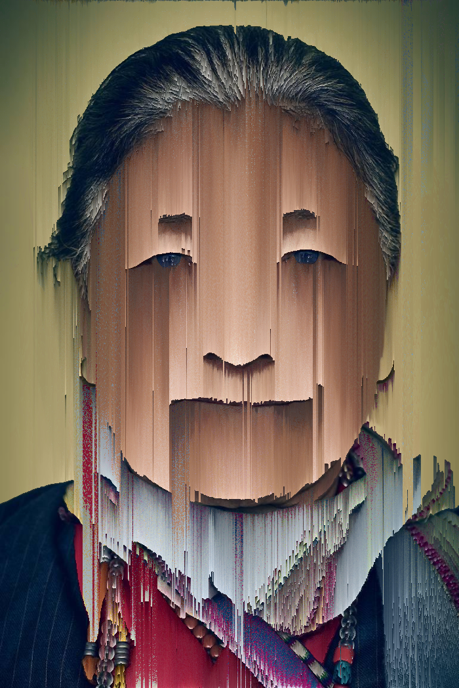
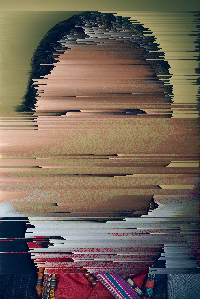

A visual experiment on selfhood, memory,
and what the system cannot recognize.
Signal degradation and pixel corruption as a metaphor for fragmented identity in digital space.
Static interference erodes the edges of the portrait, revealing the data beneath the surface.
When recognition algorithms fail, the persona dissolves into blocks of color and code.
A residual echo of the original image, trapped between layers of digital processing.
ADDITIONAL WORKS / 2026
15 GLITCH PHOTOGRAPHS / 04 SERIES









